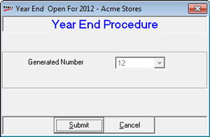
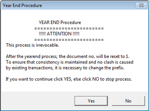
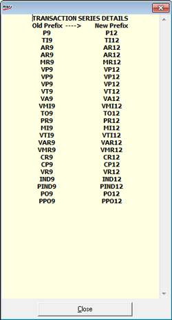

This option should be used only once, in the beginning of a financial year. The document prefixes of all the transactions will change to the new series and the document numbering will begin from 1 on completion.
How to reach: Setup > Supervisory Functions > Year End Process
The System Year End window is displayed.

Generate Number: Displays the auto generated number, incremented by 1
On clicking Submit, a caution message is displayed as shown.

On successful completion of the process, a detailed list of old prefixes and the new prefixes are displayed.
